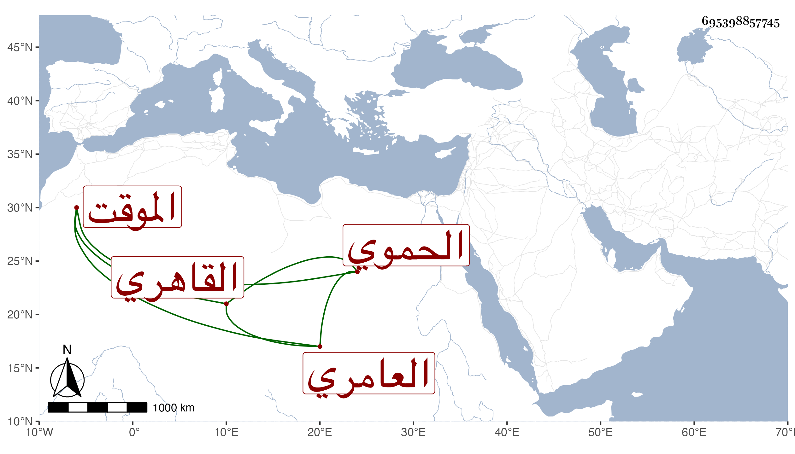

0902Sakhawi.DawLamic.ITO20230111-ara1.EIS1600.695398857745
Biography ID: 695398857745
474
عبد الرحيم بن محمد بن محمد بن محمد بن عبد المحسن بن البدر عبد اللطيف ابن القاضي التقي محمد بن الحسين بن رزين بن موسى زين الدين بن التاج بن العلاء العامري الحموي الأصل القاهري الموقت الآتي أبوه وجده ويعرف كسلفه بابن رزين من بيت جلالة . ممن أخذ عن النور بن النقاش الميقات وربما اشتغل بغيره وبرع فيه وفي حل التقويم بكماله مع تفرده بضبط الأوقات وتدقيقه في شأنه وانتفع به جماعة في ذلك ، وباشر الرياسة بجامع الحاكم أصلا ونيابة عن شريكيه فيها وكان عبوسا ساكنا راغبا في الانفراد . مات في ذي الحجة سنة خمس وثمانين وظهر الخلل بعده في الجامع المشار إليه رحمه الله وإيانا .
